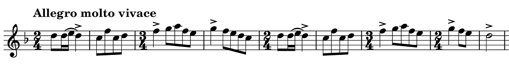

ロパルツ: 弦楽四重奏曲第4番
ラザーリの回で、イザイにヴァイオリンソナタを献呈した作曲家として一緒に名前が挙がっていたロパルツの作品を聴いてみた。そのイザイに献呈されたヴァイオリンソナタ第1番は、いい曲ではあるものの、何となく今の季節よりも初夏の梅雨の頃に合いそうな曲であった。代わりに、春を迎える今の時期にふさわしいと思われる『弦楽四重奏曲第4番』を取り上げる。
Ropartz: String Quartet No. 4 in E Major
Stanislas Quartet
(2006)
非常にコンパクトで、4つの楽章どれも3~5分程度に収まる。第1楽章はソナタ形式の見本のような、ゆっくり育てれば倍の長さになりそうな楽想をぎゅっと凝縮した密度の濃い、しかし重くはない音楽。明快なリズムで駆け抜けるので、はじけるような躍動感を感じる。一緒に入っている第5, 6番も同傾向だが、この4番が理屈抜きに最も楽しめた。
ロパルツはフランス西端のブルターニュ地方に生まれ、パリ音楽院でフランクの元に学び、故郷と反対方向のロレーヌ地方（ナンシー）やアルザス地方（ストラスブール）の音楽院院長として長く活動し、引退後は故郷のブルターニュに戻るという、綺麗に東西の線で移動する生涯であった。同時代の作曲家としては同じフランク門下のダンディと特に親交が深かったようである（ダンディの方が13歳上）。この弦楽四重奏曲は戦間期の1934年、70歳の作品である。ロパルツが赴任していた頃のナンシーといえば、ガラス細工で非常に有名なガレやドームの工房があって最盛期を迎えていた時代と重なる。上記アルバムも「ロレーヌの音楽遺産シリーズ」のような記載がジャケットにあるが曲自体はブルターニュに引退した後のものである。象嵌細工の写るこのジャケットは、ガレが家具も作っていたことを思い起こさせる（ライナーノートがないため詳細はわからない）。ロパルツは交響曲も5曲書いているし、突出した作品がないとはいえなかなかの大家だったのかもしれない。
ちなみにヴァイオリンソナタ第1番の方は、全3曲を入れた下記のアルバムが良い演奏だと思った。1907年、ナンシー時代の作品だ。第3楽章の、3拍子と2拍子が急速に交代する変拍子の舞曲的なテーマ（下記譜例）は何かに似ているようだが思い出せない（シューベルトの即興曲Op.142の4がちょっと近い雰囲気かも）。第3楽章の最後の方で第1楽章冒頭の主題が回帰し、ピアノがfffの和音を6小節以上も確保した上でヴァイオリンが荘重なレチタティーヴォ風パッセージを弾く部分があるのだが、これだけ長い間ピアノの残響を聴こえるレベルに保つのは環境にもよるが難しいと思う。共鳴効果を狙ったものであろうか。
Ropartz: Violin Sonata No. 1 in D Major
Sandrine Cantoreggi (vn)
Beatrice Rauchs (pf)
(2004)

(Mar. 18, 2023)